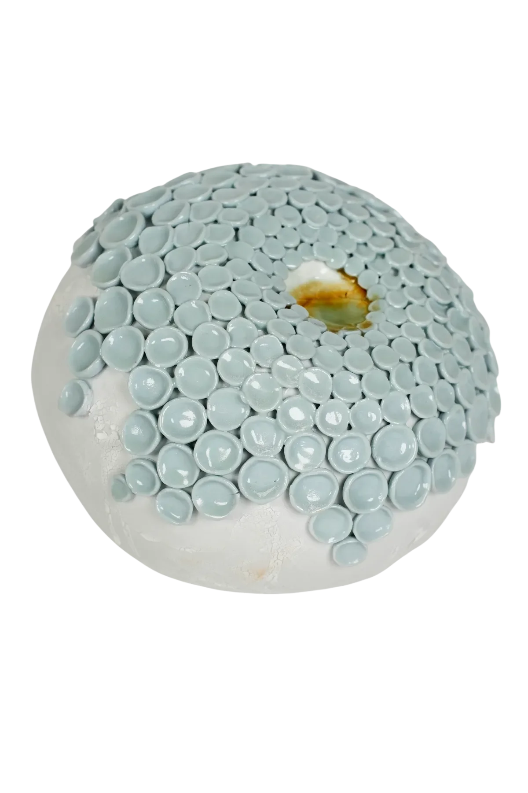

Angelica Tulimiero
Contemporary ceramic artist · Bozzolo (MN), Italy
Hand-built stoneware & porcelain sculpture — shaping the hidden patterns of matter.
One-of-a-kind ceramic works made in the studio in Bozzolo, near Mantua — sculpture and fine-art ceramics, alongside ceramics courses and clay retreats in the Italian countryside.

Selected works
All worksThe studio
Material, form, gesture.
In my studio I create ceramic and porcelain sculptures, objects, and site-specific works, combining artisanal techniques with a contemporary vision. My practice is deeply rooted in research and experimentation, always seeking balance between aesthetic beauty and tactile experience.
About AngelicaClay Retreats in Italy
Days of clay, time and quiet.
A slow retreat in the studio and the countryside around Bozzolo. You work, you rest, you make — at the pace the material asks for.
Discover the staysFrom the shop
All piecesCourses, commissions & collaborations — from open-studio sessions to bespoke works for collectors, designers and architects.
See services